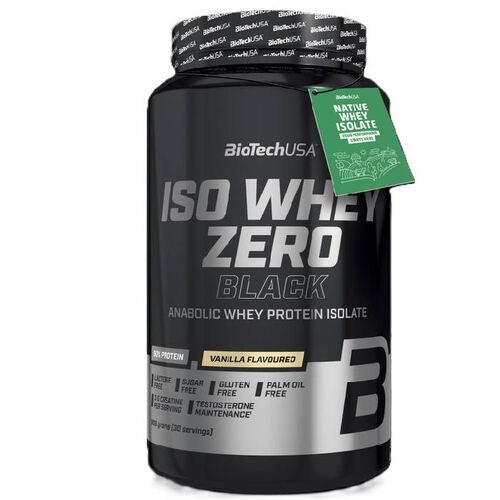

En stockIso Whey Zero Black - Vanilla (908 g)
Description
85,00 €
Iso Whey Zero Black associe une protéine de lactosérum isolée de haute qualité à une excellente digestibilité afin de soutenir le développement et le maintien de la masse musculaire.
Sa délicieuse saveur vanille et sa texture légère en font un shake agréable à consommer après l'entraînement ou entre les repas.
- Isolat de whey de qualité premium.
- Très forte teneur en protéines.
- Faible en sucres.
- Saveur Vanilla.
- Format 908 g.
A savoir
Utilisation suggérée
Mélanger une portion avec environ 250 ml d'eau. À utiliser après le sport ou en complément de votre alimentation.